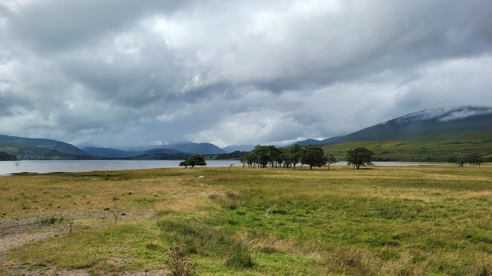
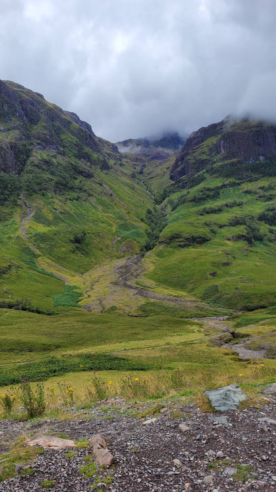
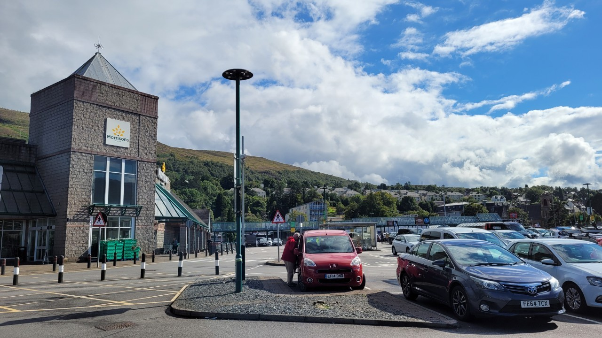
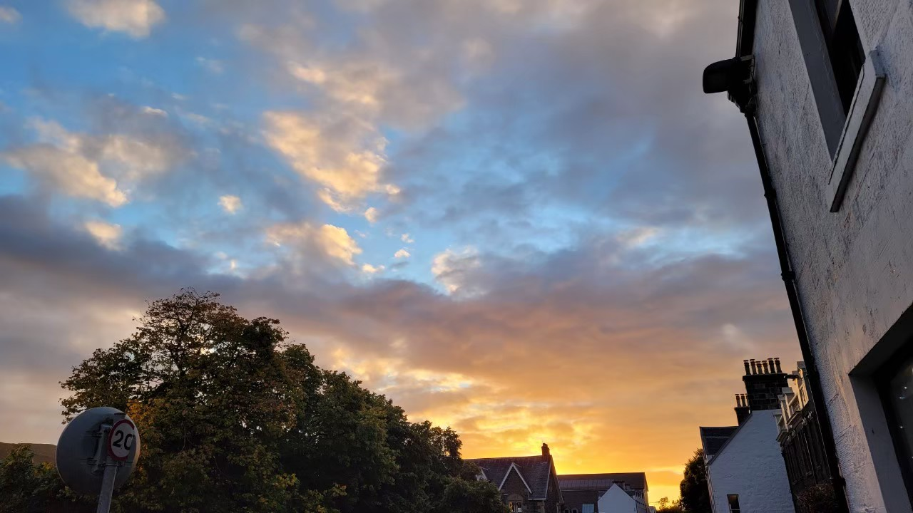
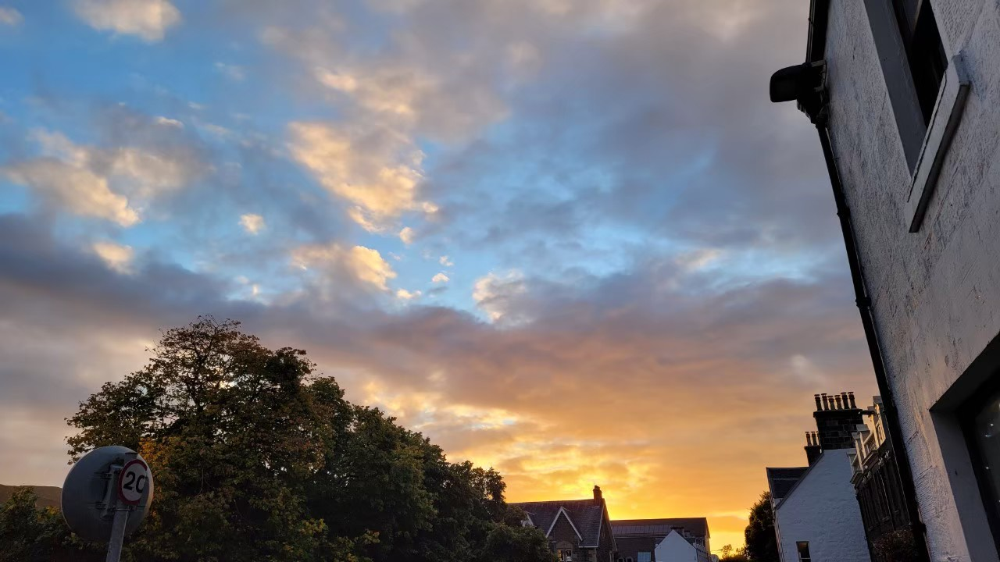

Artificial Islands in the United Arab Emirates
I used to live in the United Arab Emirates (UAE) for 15 years and a half, during my flying career. However, I had a previous experience living in a gulf country before moving to the UAE, and that was Saudi Arabia as I was born there. There are 6 gulf countries and they have some kind of similarities and yet some differences as well. They are all close to each other, you can fly in and out of one and go to the next in a maximum of approximately an hour and 10 minutes. The climate is very hot in those 6 countries during the summer, and they usually have very long summer months which are around late March to the end of October, and the period between end of October to late March is very pleasant, and tourists are advised to go there during that time.
Images: One the way to the Isle of Skye, The weather was cloudy
 One the way to The Isle of Skye
9 a.m., We left Edinburgh to begin our highland journey, and we are scheduled to arrive in the evening on the Isle of Skye. I could image this will be a long with the weather getting worse and worse. I was expecting three days of rain on our highland expedition. Unsurprisingly, the sky has changed from blue to grey since we left Edinburgh. The rain became heavier as we travelled. My mood is easy to be influenced by the weather, and thus I thought I won’t be excited on my highland trip, but I still tried to make myself enjoy every moment during the trip. The rain didn’t stop for around six hours, and thus I guessed the weather of the Isle of Skye would be worse. What’s more, I didn’t sleep well last night, so I thought I would fall asleep while arriving the hotel. Surprisingly, since we arrived Fort William, the largest city before going to the Isle of Skye. The blue sky started to say hello and welcome us. Interestingly, I became excited again and looked forward to the days on the Isle of Skye. After 90 minutes ride, we finally arrived the Isle of Skye, and the weather was sunny as expected. We also got an opportunity to watch sunset when we arrived Portree, the largest city on the Isle of Skye. How lucky we were!!!
The gulf countries are very rich countries because they have had a lot of oil since the day they discovered it there, so the lifestyle there is very comfortable and easy. A lot of expats are living there because of the great job opportunities and income they provide. Since these countries are very rich and the majority of their countries consist of huge desert areas, they aim to use that huge desert space and turn it into big luxurious projects. They also do reclaimed sand projects to build huge artificial islands.
I’m not going to talk about the dangers of artificial islands or the consequences of sand reclamation here, as during that time I was not aware of the negative aspects of these things to the environment and to the ecosystem. I started to be more knowledgeable about these things when I started my island studies program later on in Prince Edward Island. Therefore, I will talk about why people are attracted to these islands and what is on them, and also what the tourists can do there. I got the chance to visit two of these islands while I was living there; the Palm Jumeirah and the Bluewaters Island, and they are both in Dubai. I used to live in the capital city Abu Dhabi, however to go to Dubai you only need around an hour and 15 minutes drive to get there.
Images: Parking lot at Fort William, Portree Harbor, and the sunset
 

Palm Jumeirah
Palm Jumeirah is very famous because it is shaped like a palm tree when viewed from the top, which makes it an iconic artificial island. It is kind of a resort island where it has a lot of luxury resort hotels, upscale restaurants, posh residential houses and the Jumeirah boardwalk. You can describe it as an island that has all the recreational and entertainment facilities that could be enjoyed if one was alone, with friends or with families. There is always something fun to do there. It is best advised as I mentioned above to visit there from late October to the end of March to be able to enjoy the outdoor facilities such as dining outdoors, walking on the boardwalk or swimming in the beach.
Things to do while being on Palm Jumeirah Island
Atlantis the Palm, a visit to this famous hotel resort is a must there. Atlantis is a famous brand name hotel series that are located in Bahamas, China and Dubai. They have Aqua-venture water theme park which is a fun adventure for the whole family, and also you can visit the Lost Chambers Aquarium, where you can explore the mythical legendary lost city of Atlantis, among a lot of marine species and shipwreck remains. Atlantis the Palm has plenty of dining options that suit all the tastes. You can also relax and sunbathe at the White Beach there if you just like to sit down, and soak up the sun and chill
Skydiving, if you are adventurous enough, and a big fan of extreme thrills, I would advise you to book a skydiving day, where you get to jump out of the sky with a professional, and see the spectacular view of palm Jumeirah from the top. Your package will include photographs and filmed video of your jumping memorable adventure.
Water sports, there are plenty of water sports that you can do on Palm Jumeirah, such as: Standup Paddle-board tours, Kayak tours & Windsurf Lesson tours. While being on these water sport tours, you get to enjoy the stunning views of Dubai’s different skylines, and seeing the beaches of the different resorts while being in the water doing your activities.
Jumeirah Boardwalk, if you visit Dubai during the winter months, do not miss to take a walk or go for a run on the Jumeirah Boardwalk. It is very enjoyable being there and very relaxing, and it is free of charge. You can go anytime during the day, however most people love to go during the magical sunset time.
Hop on & Hop Off Bus Tours, this tour is recommended for first timers in Dubai in general, it kind of gives an introduction about Dubai and how it is structured. You can hop off at any of its stations if you would like to take some pictures, or explore some of the surroundings, and then hop on the bus again to continue your trip. It has a narration recorded in many languages, that describes the sites and locations while you are on the bus through using headphones. The top of the bus is formed of glass in case you visit Dubai during the summer, and you would be able to take pictures clearly through it.
The Palm Monorail Visit, the best way to navigate through Palm Jumeirah's favorite spots is through taking the Palm Monorail. It has scenic views of the palm and its station stops. It has several stops and you can take the monorail and hop on and off in all of them to discover them all, or you can also go to a specific location on the island.
Bluewaters Island
The other man-made island that I got to visit in Dubai is: Bluewaters Islands. It is kind of similar in its idea to Palm Jumeirah of having upscale hotels, top notch restaurants and Luxury residential areas, however it is more urban and more modern than it. You can visit Bluewaters Island by driving there or taking a taxi. If you are a fan of exploring the place through walking, then you can do so by crossing the big pedestrian link bridge that connects Bluewaters Island to Jumeirah Beach Residence location. In my opinion, I see a lot of attraction resemblance between London city in England and Bluewaters Island in Dubai.
Things to do while being on Bluewaters Island
Ain Dubai, similar to London's iconic London Eye, you can take a ride at Ain Dubai where you get to enjoy viewing the entire city from high up. The view is amazing whether it is during the day or during the night time. At night you get to see how Dubai’s city lighting is glistening among the dark. Ain means Eye in Arabic, which is basically the translation of Dubai Eye, same as London Eye.
Madame Tussaud’s Dubai, you get to visit your famous celebrities at the museum and take pictures with them, they look real even though they are made of wax. This is another attraction that also exists in London apart from Ain Dubai.
Caesars Palace Hotel & the Cove Beach, If you are a sun lover, then you have to head to the Cove Beach and enjoy a relaxing lazy day there. They have a fresh seafood restaurant there called Two.0 where you can indulge in fresh seafood dishes. They also have big swimming pools there if you prefer pools than beaches. The beach is located at the Caesars Palace Hotel at Bluewaters Island, the second to the famous Caesars Palace Hotel that is located in Las Vegas.
Bluewaters Island Wharf Retail Shops & Restaurants, you can have an amazing shopping spree at the various shops and boutiques located at the wharf of Bluewaters Island. There are also many restaurants and coffee shops. The walk on the wharf is pleasant during the winter season as it is outdoors, however the shops and restaurants are air conditioned with outdoor seating areas as well.
Islandness on the Artificial Islands of Dubai
In those artificial islands in Dubai, I never felt that I’m on an actual island if I’m going to compare it to Maldives or Boracay for instance. It is kind of more like Singapore; urban and modern places with lots of technology and luxury. A lot of people might criticize places such as the UAE or Singapore as being artificial and without a soul. I think you would form a bond or connection with such kinds of places only if you were born and brought up in a similar environment, or if you tend to be attracted to modern things in general.
I consider my case as one of those examples, especially in relation to the gulf countries, if not Singapore. Saudi Arabia, United Arab Emirates and Bahrain will always have a piece of my heart for each one of them. I just love them, and feel so safe and comfortable living in them. I do not mind one day if I go back and live in any of them one more time.
I also do understand the point of view of people who visit them for the first time and say they are artificial, they actually have a point in that. First of all they are man-made islands, and no comparison when it comes to real natural islands. Secondly, feelings of separation, periphery, isolation, separation are hard to be felt there because they do not exist in the first place in Palm Jumeirah or Bluewater islands. There, there are only tourists from different parts of the world having fun under the sun, and then they leave and another set of tourists arrive, and so on and so forth.
I call UAE a place that has miniatures of the rest of the world's attractions in it. People always refer to Dubai and say that Dubai is a different planet. There is even a song in Arabic by a famous Saudi Singer that has the title of: Dubai is a different Planet. It is definitely worth visiting and worth exploring, and then forming your own opinion about it.